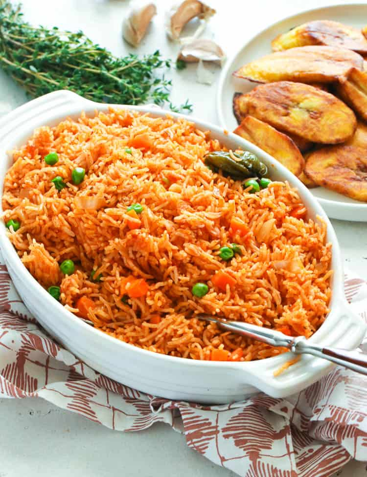
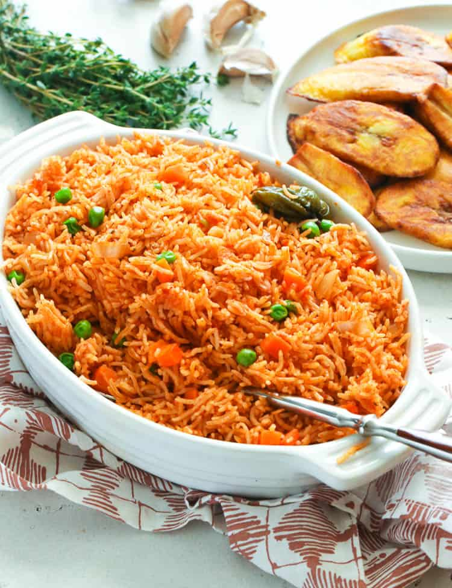

My favorite meal recipe
The name of my favorite meal is Jollof rice
The origins of jollof rice can be traced to the Senegambian region that was ruled by the Wolof or Jolof Empire in the 14th century, spanning parts of today's Senegal, The Gambia and Mauritania, where rice was grown.
A tabular list of ingredients needed to prepare the meal and their measurements are as follows;
| ingredients |
measurements |
| Rice |
5 Cups |
| Tomatoes |
5 Medium sized |
| Onions |
2 Medium sized |
| Chicken |
As much as you want |
A list of steps/methods to prepare Jollof Rice
- First, blend the bell peppers, plum tomatoes, scotch bonnet, and brown onion.
- Place a pot on heat, add oil into the pot, then add in sliced onions. Sautee the onions till they are fragrant and translucent. This should take about 2 minutes
- Next, add in the tomato puree/tomato paste. Fry for 5-10 minutes till reduced in quantity and doesn't taste tart.
- Add in the blended peppers, curry powder, dried thyme, stock cubes, bay leaves, and salt. Fry till it is dark red and no longer raw. It will be reduced in quantity, thick and the oil floats to the top of the sauce. This takes about 10 - 15 minutes.
- Then add in the chicken broth, and boiling water. Stir, add in the washed rice. Cover the pot tightly and cook the rice on low heat till it's almost tender. (About 25 minutes).
- Add the remaining sliced red onion, sliced tomato, and butter, Cover the pot and continue to steam the rice till it's tender.
- Stir the rice and take it off the heat.
Serve and enjoy!

 
